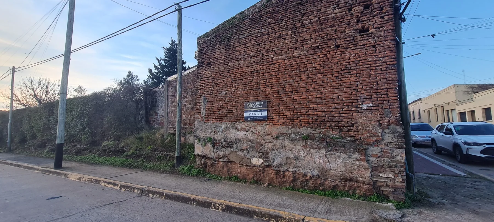
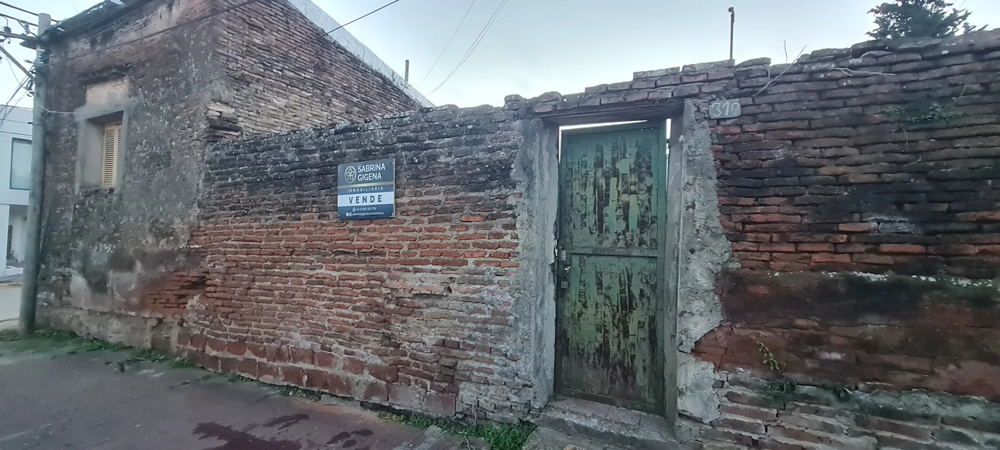
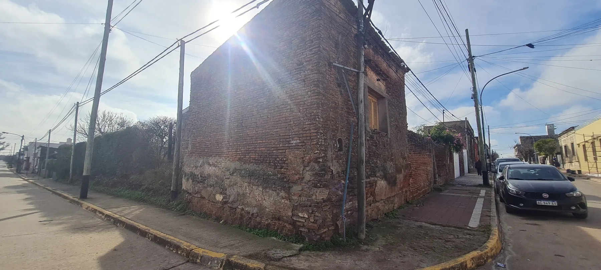
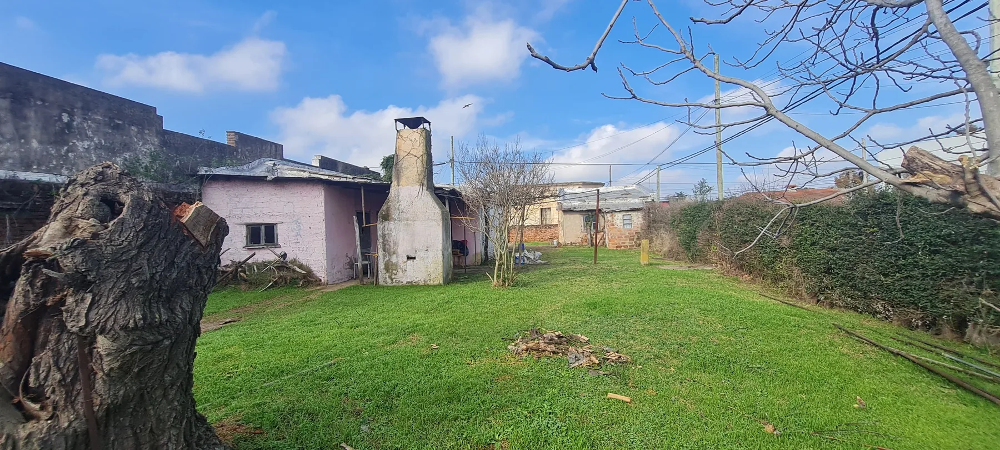

Terreno Casco Urbano
Esquina con fachada histórica y potencial gastronómico, comercial o residencial en pleno casco urbano.
Una esquina con historia. Un proyecto con futuro.
La propiedad combina ubicación céntrica, una esquina visible y una fachada antigua con carácter. Es una base atractiva para desarrollar una propuesta gastronómica, comercial o residencial con identidad propia.
Superficie y construcciones existentes
El lote tiene 437,90 m², de los cuales 88 m² corresponden a construcciones existentes y 349,90 m² quedan libres. Parte de la edificación está catalogada como bien de interés histórico y cualquier intervención debe evaluarse conforme a las disposiciones municipales y patrimoniales vigentes.
Ubicación
En la intersección de Mateo S. Casco y 14 de Septiembre, dentro del casco urbano de Capilla del Señor. Cuenta con dos frentes, buena iluminación y un contexto de circulación comercial.
Galería

